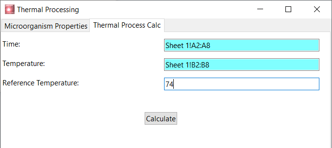

Needs vary and a user is not limited to the apps shipped with ScienceSuit. By using IUP and Lua and also the provided data structures and built-in functions, it is easy for someone who has an understanding of programming to develop apps and add new ribbon pages to ScienceSuit framework. The following piece of code has been used to design the page of the app shown in the figure below.

Please also note that by using the gridtext control,
which is provided in std.gui library, it is very easy to make
an app to support the selection of a range from a worksheet and display the
selection to the user as shown in figure below. It is seen from the figure
that the selection is shown to user as "Sheet 1!A1:B3".
Here the worksheet name is "Sheet 1" and the selected
range is from "A1" to "B3" as seen from the following figure.
The selection can be changed by making a new selection or by simply editing the text.
local lblTime=iup.label{title="Time:"}
local txtTime=std.gui.gridtext()
local lblTemperature=iup.label{title="Temperature:"}
local txtTemperature=std.gui.gridtext()
local lblRefTemp=iup.label{title="Reference Temperature:"}
local txtRefTemp=std.gui.numtext{min=1, max=150, value=121}
local btnCalc=iup.button{title="Calculate"}
local TimeTemps=iup.gridbox{lblTime, txtTime, lblTemperature, txtTemperature, lblRefTemp, txtRefTemp, numdiv=2,
HOMOGENEOUSCOL="yes",CGAPLIN=10, CGAPCOL=5, orientation="HORIZONTAL"}
local vbox1=iup.vbox{iup.space{size="x5"}, TimeTemps,
iup.space{size="x20"}, alignment="ALEFT"}
local vbox2=iup.vbox{btnCalc,alignment="acenter"}
local vboxes=iup.vbox{vbox1, vbox2, alignment="acenter"}
local page2=iup.hbox{vboxes, iup.space{size="10x"}}
page2.tabtitle="Thermal Process Calc"
local m_tabs=iup.tabs{page1,page2}
local dlgThermalProcess = iup.dialog{m_tabs, title="Thermal Processing", size="350x200"}
txtTime:setOwner(dlgThermalProcess)
txtTemperature:setOwner(dlgThermalProcess)